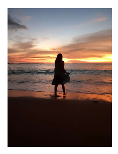

Turstic
Sofia Lara
Mi nombre es Sofia y tengo 15 años

Yo siento que la contaminacion marina es uno de los problemas mas grandes en este planeta el agua es uno de los recursos mas importantes y hay que cuidarlo.
Hay muchos animales y cuando contaminamos estamos contamindando tanto su hogar como el nuestro y ellos no pueden hacer nada nosotros como una raza superior tenemos que actuar de una forma correcta.
Yo decidi hacer este sitio web de 2 cosas que se complementan: LA CONTAMINACION MARINA Y LAS TORTUGAS MARINAS
de aca su nombre Turstic Tortugas+Plastic
Una tortuga bebe no puede llegar por si sola a su hogar ya que hay muchas amenazas y aunque llegara al mar hay una gran probabilidad que se quede atascada en un pedazo de plastico por esto yo quiero limpiar el mar y las playas para llevar a las tortugas hacia un hogar digno y agradable
Yo desde pequeña me dije a mi misma que queria DEJAR UNA HUELLA, marcar la diferencia en el mundo.
A mi me gustan mucho las playas y no quiero que llegue un día en el que ya no existan o no me cause la misma emocion ir porque estaria a tascada de basura, si no cambiamos nuestros hábitos lastimosamente ese día llegara pero estamos a tiempo para evitarlo
yo creo que:
Todos juntos podemos marcar la diferencia